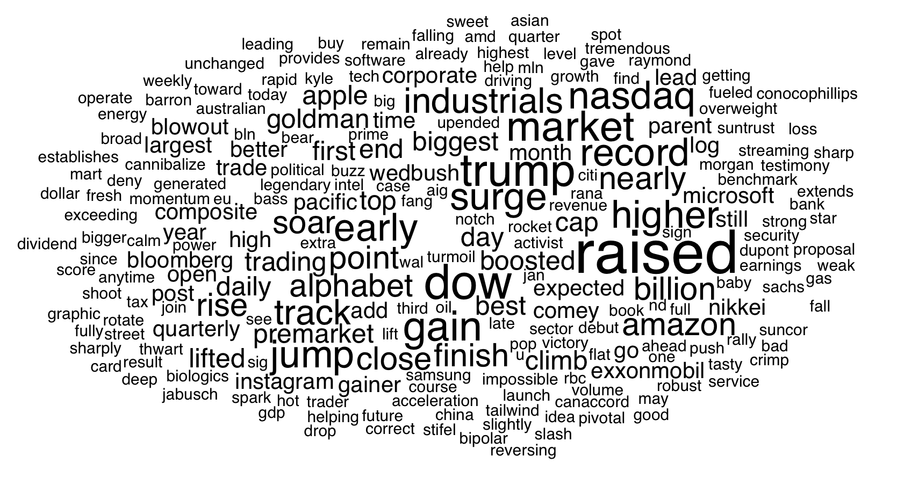
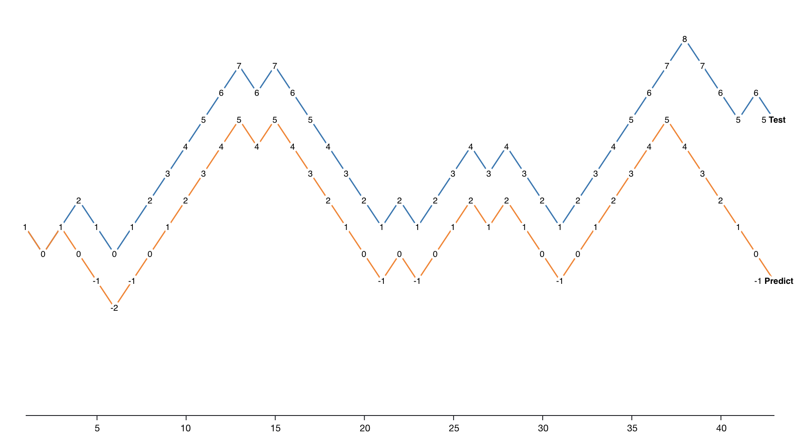
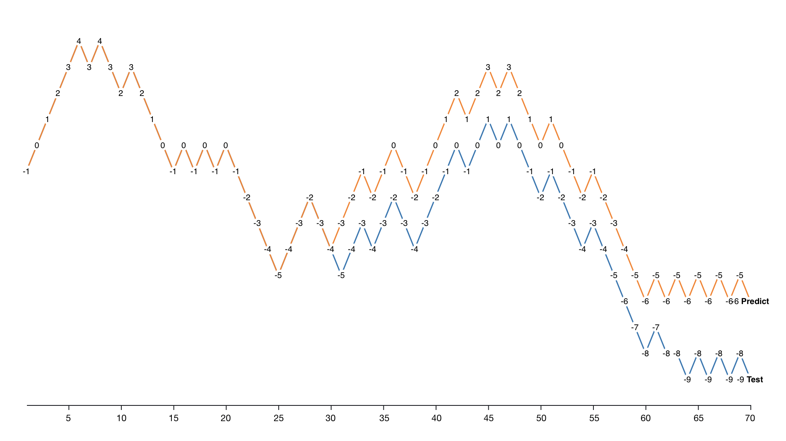
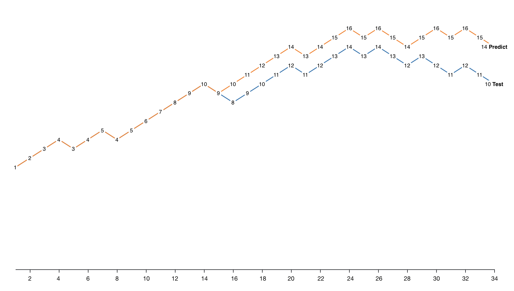
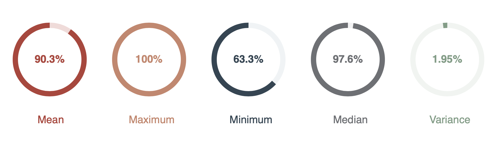
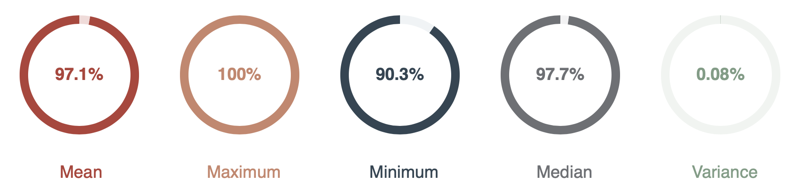
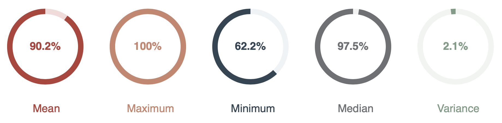
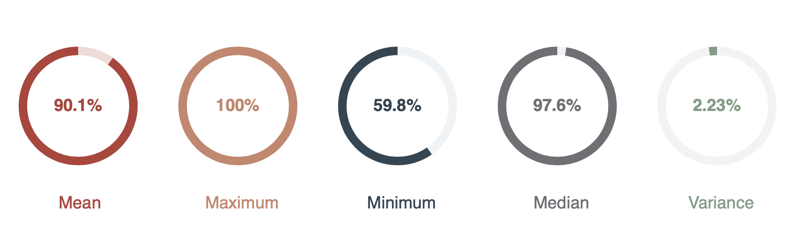

Our goal is price prediction for 44 companies. For every company, we trained with its corresponding vector in our model and output the result (+1:raise, -1: fall, 0: stay the same). Every companies’ vector has 3 components: history prices (6-dimensional vector), news data (transferred to a 100-dimensional vector with doc2vec) and sentiment value (1-dimensional vector calculated with VADER). If the accuracy of the test set is more than 80%, then we consider the model a success.
We chose this model because it’s a classification problem and SVMs can classify more precisely. We’ve also considered the Neural Network. We measure the success with four values: accuracy of test set, F1 score of testing set, recall rate of testing set, and precision of testing set. Setting the parameters is a challenge. We cleaned our data in the data deliverable part. The data doesn’t really have any sensitive attributes that could affect our machine learning model.
Results
Our results are all measurements of test accuracy. The recall measures the proportion of actual positives that are correctly identified and the F1 score considers both the precision p and the recall r of the test to compute the score: p is the number of correct positive results divided by the number of all positive results returned by the classifier, and r is the number of correct positive results divided by the number of all relevant samples. We are satisfied with our prediction accuracy and confident in the result. The accuracy metric is 80% because we think it’s high enough, while 90% is too high and 70% is too low.
Visualization
The word count image is a quick look at the keyword of news data. The Predict VS test image is a clear visualization of how well our model does (we can see that except for some single points, the rise and fall is basically the same. The parameter of the training model provides some quantization evaluation such as recall rate. We tried to plot the accuracy of every stock with histogram but we’ve got too many stocks so the width of every bin is too narrow. We think our visualization needs some of the text explanation.
Word Cloud
The word cloud shows typical keywords for stock price going up.

Predict vs. Test

IBM

Facebook

CBS
Recall Rate

Accuracy

F1 Score

Precision

Next Steps
We are trying to use more ML algorithms in the future and try to use more ways to visualize.